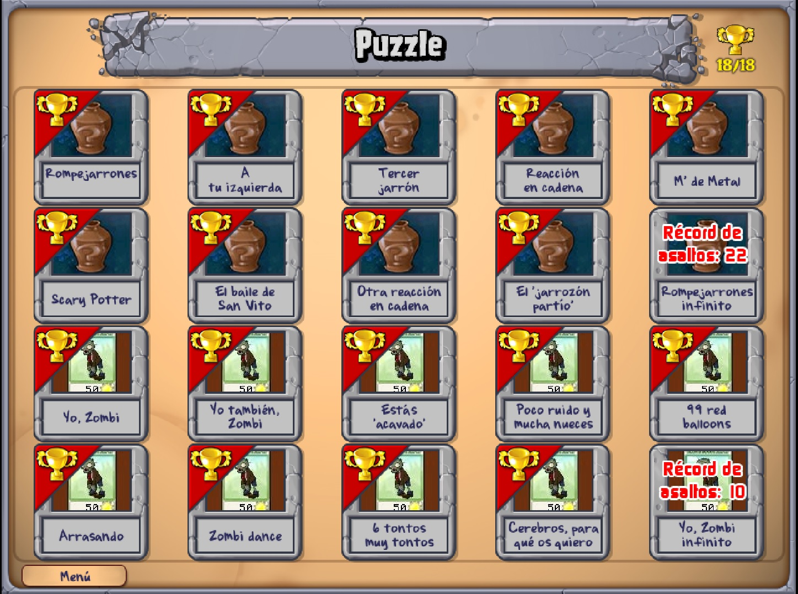

Aventura
El modo Aventura es el modo principal de Plantas contra Zombis. En él se pone a prueba tu habilidad para defenderte de las hordas de zombis deseosos de ocupar tu propiedad y comerse tu cerebro.
Los ataques de los zombis se dividen en cinco fases, cada una de las cuales consta de 10 niveles:
- Fase 1: Día.
- Se desarrolla durante el día. Tu césped tiene cinco filas.
- Fase 2: Noche.
- Se desarrolla durante la noche. Tu césped tiene cinco filas y puedes utilizar plantas nocturnas.
- Fase 3: Piscina.
- Se desarrolla durante el día. Tu césped tiene seis filas, dos de las cuales corresponden a la piscina.
- Fase 4: Niebla.
- Se desarrolla durante la noche. Tu césped tiene seis filas (dos de las cuales corresponden a la piscina) y parte del césped queda cubierto por la niebla.
- Fase 5: Tejado.
- Se desarrolla durante el día en tu tejado. El tejado tiene cinco filas.
Los niveles 5 y 10 de cada fase son distintos del resto. Normalmente, el nivel 5 de cada fase es un minijuego,
mientras que en el nivel 10, antes de empezar a jugar, las semillas te llegan a través de una cinta transportadora,
en lugar de elegirlas directamente.
Cuando hayas terminado el modo Aventura, puedes volver a jugar, pero esta vez Crazy Dave elegirá al azar tres plantas para cada nivel.
A veces, las plantas que elija te serán útiles, pero otras no tanto. Por cada nivel que superes durante esta segunda partida en el modo Aventura,
recibirás cinco monedas de oro (250 €).
Minijuegos
Este modo se desbloquea cuando recibes el regalo en la mitad del nivel 3-2 del modo Aventura. Para acceder a los minijuegos,
haz clic en el botón "Minijuegos" de la lápida del menú principal
Cuando se desbloquea este modo, sólo puedes jugar a tres minijuegos.
Una vez completado el modo Aventura, el resto de minijuegos estarán disponibles,
pero bloqueados. Cada vez que termines un minijuego, se desbloqueará otro.
En total hay 28 minijuegos. Son los siguientes: Vegezombis, La bolera, Tragaperras, Semillas caídas, Macabra, Invisibles,
Viendo las estrellas, Zombiquarium, Giro macrabra, Pequeños pero matones, Portal Combat, ¡Formen! ¡Arr!, Carreras de bobsleigh,
Zombis "zumbaos", Mola "mazo", El último batallón, Vegezombis 2, La bolera 2, Saltimbanquis y La venganza del Dr. Zombi.
Por cada minijuego que completes, recibirás un diamante (1.000 €). Aunque hayas superado un minijuego,
puedes repetir cuando quieras; ganarás cinco monedas de oro (250 €) por cada vez que lo vuelvas a completar.
Además, cada vez que juegas a un minijuego, los zombis pueden dejar caer plantas para tu Jardín Zen.
Puzzle
Este modo se desbloquea cuando recibes el regalo en la mitad del nivel 4-6 del modo Aventura.
Para acceder a los rompecabezas, haz clic en el botón "Puzzle" de la lápida del menú principal.
Hay dos tipos de rompecabezas: Rompejarrones y Yo, Zombi.
En Rompejarrones, el césped está lleno de jarrones. Tu misión es romper los jarrones,
esperar a que salga una planta o un zombi, y luego utilizar las plantas para destruir a los zombis. Hay 10 niveles: Rompejarrones,
A tu izquierda, Tercer jarrón, Reacción en cadena, "M" de Metal, Scary Potter, El baile de San Vito, Otra reacción en cadena, El '"jarrozón partío"
y Rompejarrones infinito. Por cada nivel de Rompejarrones que completes, recibirás cinco monedas de oro (250 €). Si superas de nuevo un nivel ya completado,
recibirás 2 monedas de oro (100 €).
En Yo, Zombi, debes distribuir a los zombis para que vayan devorando las filas de plantas de cartón.
¡Cómete todas las filas y al final podrás deleitarte con un suculento cerebro! Hay 10 niveles: Yo, Zombi,
Yo, Zombi 2, Estás "acavado", Poco ruido y muchas nueces, 99 red balloons, Arrasando, Zombi dance, 6 tontos muy tontos, Cerebros,
para qué os quiero y Yo, Zombi infinito. Por cada nivel que completes, recibirás un diamante (1.000 €). Si superas de nuevo un nivel ya completado,
recibirás 5 monedas de oro (250 €).

Supervivencia
Este modo se desbloquea tras superar el modo Aventura. Para acceder al modo Supervivencia,
haz clic en el botón "Supervivencia" de la lápida del menú principal.
En este modo, tienes que luchar contra oleadas de zombis cada vez más poderosas.
Tras cada oleada o bandera, puedes elegir de nuevo las plantas para reforzar tus defensas.
Hay 11 niveles de supervivencia:
- Supervivencia: Día
- Supervivencia: Noche
- Supervivencia: Piscina
- Supervivencia: Niebla
- Supervivencia: Tejado
- Supervivencia: Día (difícil)
- Supervivencia: Noche (difícil)
- Supervivencia: Piscina (difícil)
- Supervivencia: Niebla (difícil)
- Supervivencia: Tejado (difícil)
- Supervivencia: Piscina (infinito)
Los niveles fáciles tienen cinco banderas, los difíciles tienen 10 y el nivel infinito tiene tantas banderas como consigas destruir.
Por cada nivel que completes, recibirás un diamante (1.000 €). Si superas de nuevo un nivel ya completado, recibirás 5 monedas de oro (250 €).
Jardin Zen
El modo Jardín Zen se desbloquea una vez completado el nivel 5-4 en el modo Aventura.
Para acceder a este modo, haz clic en la regadera "Jardín Zen" del menú principal.
Jardín Zen es un modo relajado en el que puedes almacenar los regalos que has recibido jugando de nuevo al modo Aventura
o por primera vez a los modos Minijuegos, Puzzle o Supervivencia. Mima a tus plantas regándolas, abonándolas, rociándoles
pesticidas y poniéndoles música. Si tus plantas son felices, te darán monedas. A medida que ganes dinero, podrás comprar más plantas,
productos para las plantas que ya tienes y nuevos complementos para tu jardín zen; así podrás exponer tu colección de plantas nocturnas y acuáticas.
Puedes tomarte el Jardín Zen de varias maneras. Para empezar, puedes tomártelo como un lugar donde ganar dinero sin hacer nada gracias a Stinky el caracol,
pero también puedes cultivar las plantas hasta que crezcan y luego venderlas a cambio de dinero. También existe la opción de crear una colección en la que haya
una planta de cada tipo (en las versiones orientada a la derecha y a la izquierda), o plantas con algún elemento parecido (por ejemplo, acumular plantas de todos
los tonos anaranjados y con todas las orientaciones, y luego colocarlas en una disposición atractiva).
Las plantas del Jardín Zen tienen cuatro tamaños distintos: semillero,
pequeño, mediano y grande. Las margaritas que compras en la tienda son de tamaño pequeño,
mientras que el resto de plantas recogidas empiezan siendo plantas de semillero. Cuanto más crezca una planta,
más dinero te dará cuando la vendas.
Para que las plantas crezcan, tienes que regarlas y abonarlas. Cuando una planta necesite agua, sobre ella aparecerá un bocadillo con una gota de agua,
mientras que si necesita abono aparecerá un bocadillo con abono. Si riegas o abonas la planta en cualquier otro momento, no tendrá ningún efecto.
Tras regarla unas cuantas veces (el número exacto puede variar, pero suele ir de tres a cinco), la planta reclamará abono y, si se lo das, crecerá hasta alcanzar el siguiente tamaño.
Cuando una planta alcance su tamaño máximo, te dará diamantes (al regarla y abonarla también te dará también monedas)
para que las setas y las plantas acuáticas dejen de ser pequeñas, tienes que plantarlas en el tipo de jardín adecuado,
es decir, en el jardín de setas o en el jardín acuático.
Aunque una planta haya terminado de crecer, seguirá pidiendo agua y,
tras regarla varias veces, pedirá un artículo especial, que puede ser un fumigador o un fonógrafo.
Cuando le hayas dado lo que pide, la planta se pondrá contenta, empezará a brillar y cada cierto tiempo soltará una moneda
(de oro o de plata) para que la recojas. La alegría de las plantas dura un día entero
Este sistema automático de producción de monedas puede combinarse con la recogida pasiva que lleva a cabo Stinky el caracol.
Cuando está despierto, Stinky recorre el jardín recogiendo monedas y, si le das chocolate (podrás obtenerlo en otros modos si has comprado a Stinky el caracol),
se desplazará mucho más rápido durante una hora entera. Una buena estrategia es tener unas cuantas plantas de tamaño grande contentas, dar chocolate a Stinky el caracol
y dejar que el juego se vaya desarrollando solo mientras haces alguna otra cosa.
Si compras el Árbol de la sabiduría en La tienda de Crazy Dave, podrás acceder a
él desde el Jardín Zen. Este árbol te cuenta trucos para jugar y te da sabios consejos botánicos para la vida.